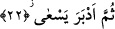

mûcize” deyimi ile, asanın yılana dönmesi kasdedilmektedir.
21. (O ise) hemen yalanladı ve isyan etti.
Fir’avn hemen Mûsâ’yı yalanladı. -İsyan ve böbürlenmede son derece ileri gittiği
için- bunu görür görmez hiç düşünmeden, kafa yormadan, akli bir delil getirmesini
istemeksizin, fikri ve kalbi herhangi bir destek talebinde bulunmaksızın Mûsâ’yı
yalanladı. “Ve” o meselenin doğru olduğunu bildikten ve buna itâat etmenin gerekli
olduğu hakkında bilgi sâhibi olduktan sonra en beter ve çirkin bir isyanla Allah’a
“isyan etti.” Çünkü âlemlerin rabbi olan Allah’ın varlığını doğrudan inkâra kalkıştı. Bu
âyetin başında atıf için gelen “vav” harfi bize gösteriyor ki, en büyük mûcizenin
gösterilmesinin hemen ardından Allah’a isyan demek olan bunu yalanlama olayı
gerçekleşmiştir. Bu, yalanlamış olduğu şahsın doğrulanması gereken bir kimse olduğunu
bile bile, dil ile yapılmış bir yalanlama idi. Doğrulanması gerekmeyen bir kimseyi
yalanlamak ise isyan olmaz.
Âyetteki “fe ‘asâ” kelimesine “Fir’avn Allah’a isyan etti” şeklinde mânâ verildi.
Buna, “kendisine emrettiği hususlarda Fir’avn Mûsâ’ya isyan etti” anlamını vermek de
mümkündür. Ancak birinci ihtimal, onu zem ve durumunu çirkin gösterme açısından
daha yakın bir ihtimaldir.
Fir’avn ve kavmi sâdece İsrailoğullarını esaretten ve baskı altında tutmaktan
salıvermekle değil, aynı zamanda rablık iddiâsını terkedip Allah Teâlâ’ya kulluk
yapmakla da emrolunmuşlardı.
Mârifet ehli âlimlerden biri der ki: Allah Teâlâ Fir’avn’a sâdece mûcize gösterdi.
Eğer ona mûcizelerdeki sıfatların nurlarını da göstermiş olsaydı Fir’avn asla kâfir
olmaz, rablık iddiâsında bulunmazdı. Çünkü sıfatların nurları mertebesi muhabbet, aşk
ve boyun eğme makamıdır. Sıfatların görülmesi tevazuyu, zâtın görülmesi ise
arbedeyi/kargaşayı gerektirir. Şu halde Fir’avn mûcizeleri görerek sıfatları görmekten
mahrum olmuştur. Onda sıfatın nurunu müşâhede etme istidadı bulunmadığı için
mûcizeleri gördüğünde muhabbetten nasibi olmamıştır. Bundan dolayı Allah Teâlâ’ya
karşı boyun eğmemiş, hakkında âyette “hemen yalanladı ve isyan etti” ifâdesi
kullanılmıştır.
22. Sonra (inkâr) için olanca çabasını göstermek üzere sırtını döndü.
Fir’avn mûcizeleri gördüğünde bunlara karşı gelmenin mümkün olduğuna